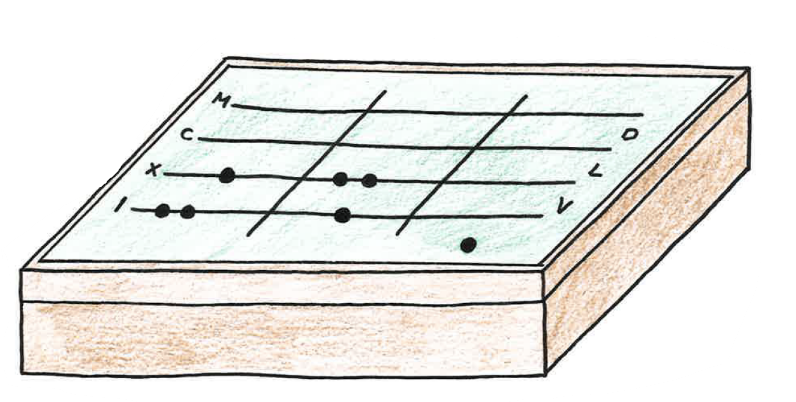

Bauanleitung
Im Folgenden finden Sie eine Schritt für Schritt Anleitung zur Erstellung des Rechenbrettes. Das benötigte Material finden sie unter dem Navigationsreiter "Material"
1. Brett bauen
Als erstes wird das Brett gebaut: Alternativ kann es auch aus Karton hergestellt werden.
1.1 Holz verarbeiten
zuschneiden, schleifen, zusammenschrauben, kleben
1.2 Brett bemalen
Rechenlinien, Kamera-Orientierungspunkte
1.3 Kamerastativ
Stativ aus Holz. Alternativ auch ein fertiges Kamerastativ.